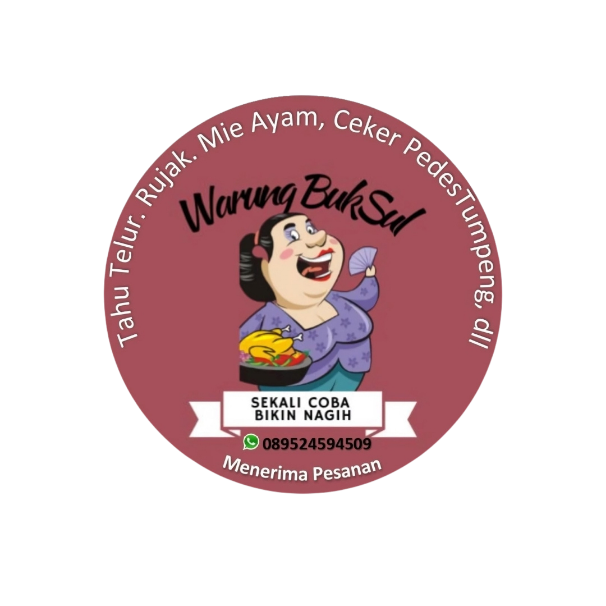
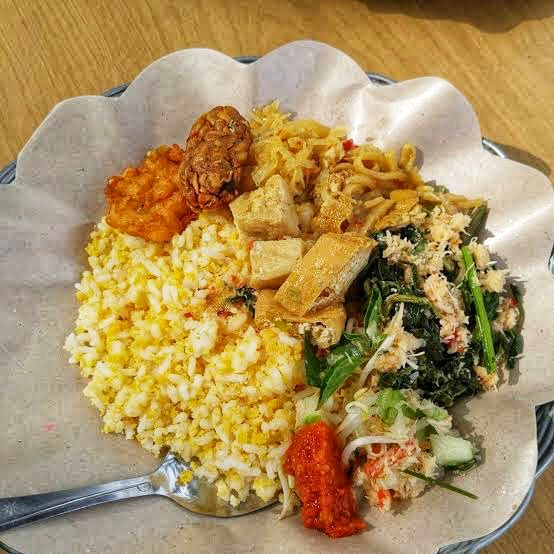
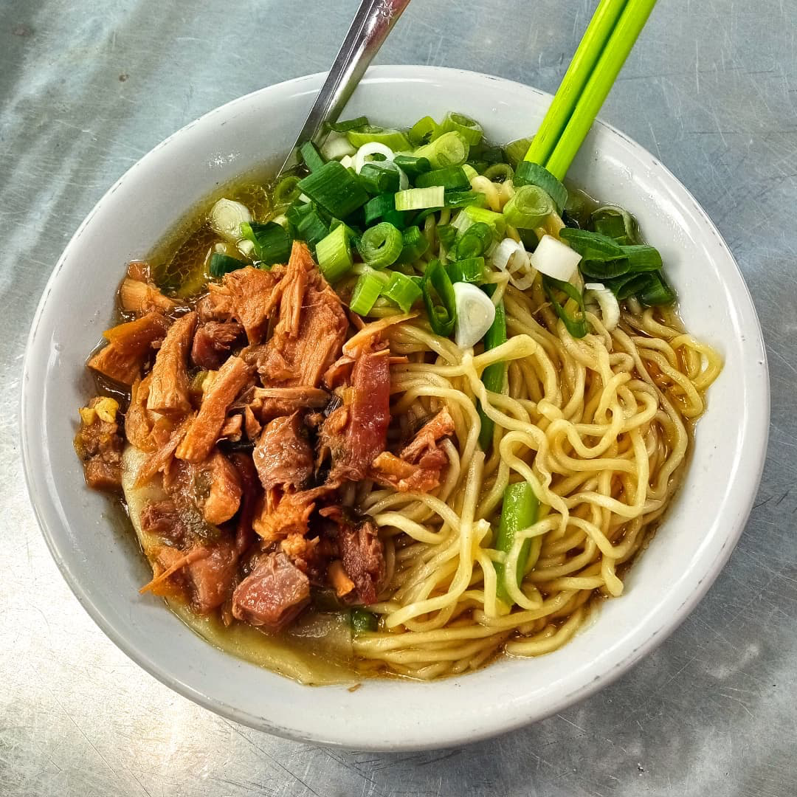
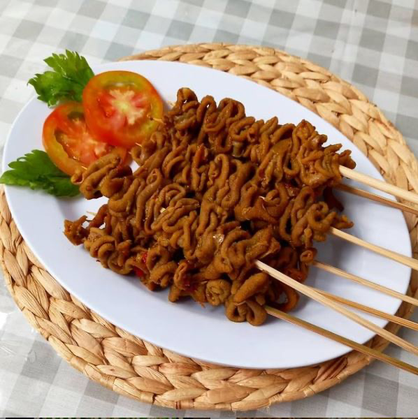
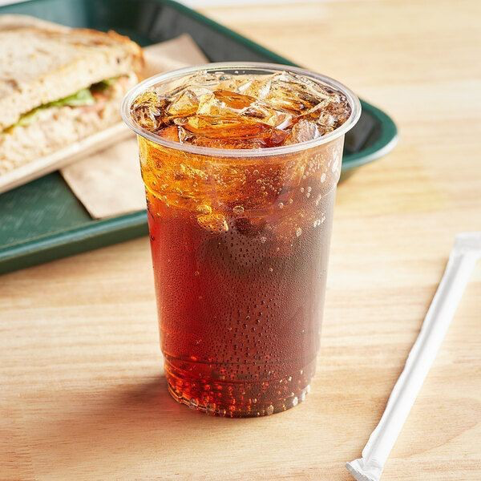

Kami memilih setiap bahan dengan teliti — mengikuti tradisi dan kelezatan khas Indonesia.
Beli Sekarang
Beberapa favorit pelanggan bulan ini, dipilih langsung dari katalog kami.




Warung kami adalah yang terbaik dalam menyajikan makanan khas Indonesia dengan rasa autentik dan bahan berkualitas tinggi.